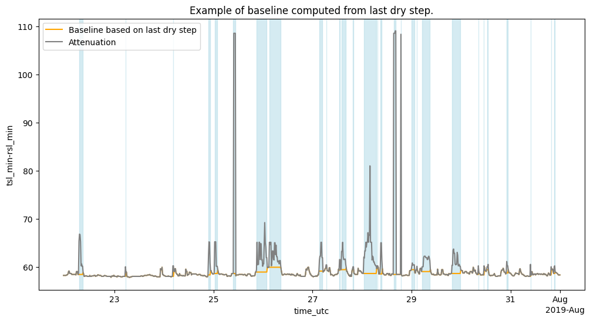

cml, wet = open_cml_sample(), open_cml_sample("wetdry")Baseline
This module groups the methods related to the baseline estimation.
Last dry step as baseline
We will implement the simplest possible model, which consists of assuming that the baseline is constant and equal to the last step classified as dry. This algorithm only requires past time steps, which makes it very suitable for real-time rainfall estimation. In addition, it is very easy to compute, which makes it suitable for low-resource computation. So let’s say we have the following time series for a sublink:
[59, 60, 90, 75, 59, 58, 59, 80]And lets assume that our wet/dry classification model classified the data as:
['dry', 'dry', 'wet', 'wet', 'dry', 'dry', 'dry', 'wet']Then the baseline would be:
| Attenuation | Wet/Dry | Baseline | |
|---|---|---|---|
| 0 | 59 | dry | 59 |
| 1 | 60 | dry | 60 |
| 2 | 90 | wet | 60 |
| 3 | 75 | wet | 60 |
| 4 | 59 | dry | 59 |
| 5 | 58 | dry | 58 |
| 6 | 59 | dry | 59 |
| 7 | 80 | wet | 59 |
get_bl_as_last_dry_step
get_bl_as_last_dry_step (att:xarray.core.dataset.Dataset|xarray.core.dat aarray.DataArray, wet:xarray.core.dataarray.DataArray)
Create a baseline based on the last dry step before the each wet event.
| Type | Details | |
|---|---|---|
| att | xarray.core.dataset.Dataset | xarray.core.dataarray.DataArray | ds containing the raw attenuation variables |
| wet | DataArray | da containing wet events as booleans |
| Returns | xarray.core.dataset.Dataset | xarray.core.dataarray.DataArray | ds containing the baseline of all the attenuation variables in the input |
Exported source
def get_bl_as_last_dry_step(
att: xr.Dataset|xr.DataArray, # ds containing the raw attenuation variables
wet: xr.DataArray # da containing wet events as booleans
) -> xr.Dataset|xr.DataArray: # ds containing the baseline of all the attenuation variables in the input
"""Create a baseline based on the last dry step before the each wet event."""
def updated_attrs(da, method):
return {"long_name": getattr(da.attrs, "long_name", da.name) + "_baseline", "method": method}
baseline = att.where(~wet).ffill(dim="time")
fname = inspect.currentframe().f_code.co_name
if isinstance(att, xr.DataArray):
baseline.attrs = {**baseline.attrs, **updated_attrs(baseline, fname)}
else:
for v in baseline.data_vars:
baseline[v].attrs = {**baseline[v].attrs, **updated_attrs(baseline[v], fname)}
return baseline<xarray.Dataset> Size: 36MB
Dimensions: (cml_id: 126, sublink_id: 6, time: 2964)
Coordinates: (10)
Data variables:
tsl_max-rsl_max (cml_id, sublink_id, time) float64 18MB 57.6 57.8 ... nan
tsl_min-rsl_min (cml_id, sublink_id, time) float64 18MB 58.8 58.3 ... nan
Sample data generation
To help with development and illustration, we will save the generated wet classification as a sample, as we will need sample data from different processing steps. This sample data is only used for illustration purposes. Additionally, during dry periods, the difference between the minimum, average and maximum signals should be small. For simplicity, we will only save the baseline computed from the average signal.
var = "baseline"
baseline = get_bl_as_last_dry_step((cml["tsl_avg"] - cml["rsl_avg"]).to_dataset(name=var), wet)
baseline[var].to_netcdf(get_cml_sample_fp("baseline"), encoding={var: {"zlib": True, "complevel": 5}})